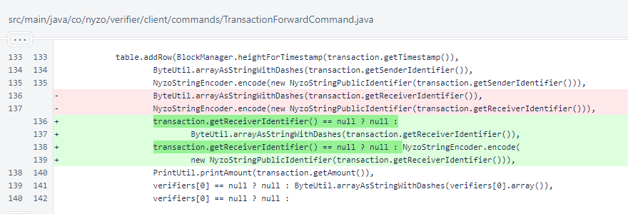

Nyzo version 584 (commit on GitHub) corrects an issue that was preventing the client from forwarding cycle-signature transactions.
This version affects the client only.
This version is due to a bug report by a community member who opened an issue on GitHub.
The TransactionForwardCommand is an exceptionally useful functionality provided by the client. With it, a user can create a transaction with zero knowledge of the current state of the blockchain and pass to the client all responsibility for getting that transaction into the blockchain. The endpoint provided by this command is already used by the Chrome extension for quickly and easily sending tips.
However, this command was not working for cycle-signature transactions. The issue was due to cycle-signature transactions lacking a receiver identifier.
In TransactionForwardCommand.run(), the receiver identifier of the transaction was not checked for a null value. This caused an exception to be thrown when the value was used to create a NyzoStringPublicIdentifier for display in the result table. A null check was added for this value, and another null check was added to provide better typing for the hexadecimal value.
